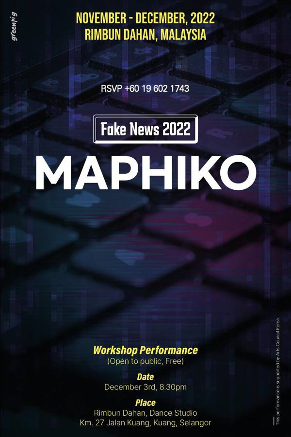

그린피그 > 아카이브 > Fake News 2022-MAPHIKO
공동창작, 박현지·Sharifah Alesha Al-yahya·James Harvey Estrada 연출

말레이시아, 필리핀, 한국이 정치·경제를 통합한 연대국가 '마-피-코'를 세운다는 가상의 시나리오에서 출발한다. 식민 지배와 독재, 검열을 겪은 세 나라가 새 국가의 수장을 뽑는 선거를 치르고, 후보자들의 이야기가 논리를 얻어 누군가를 설득해 가는 과정에서 가짜뉴스의 메커니즘을 탐구한다. 페이크 뉴스 프로젝트.
2022.12.3 / 말레이시아 Rimbun Dahan
2023.5.20–21 〈마-피-코〉 / 경기상상캠퍼스 - 수원연극축제 초청
2023.10.21–22 〈마피코 MAPHIKO〉 / 전남도청 본관 앞 - 광주프린지페스티벌 초청
이전: 〈악연-스무 번째 생일 소원〉 | 다음: 〈엑스트라연대기〉
아카이브로 돌아가기